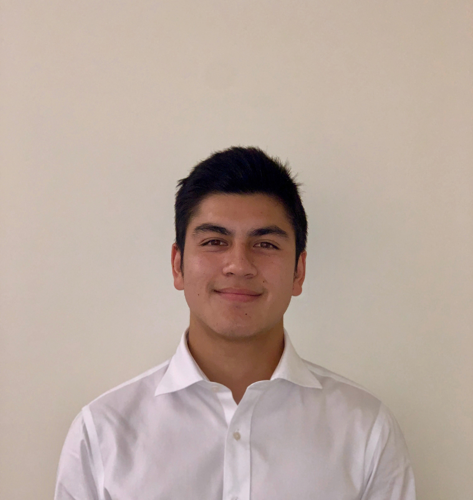
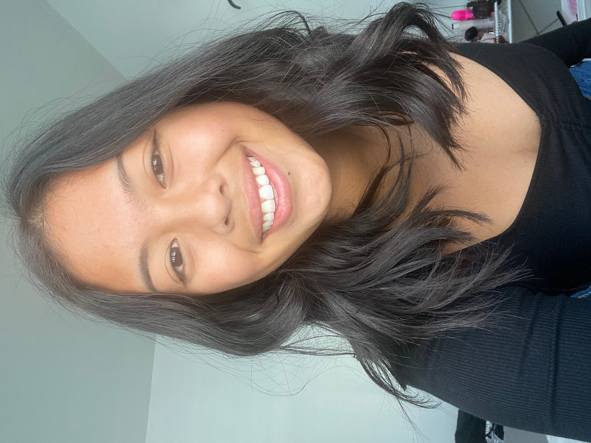

EXECUTIVE BOARD 2020-2021
President: Orlando Caballero

My name is Orlando Caballero and I am a junior majoring in Public Health and minoring in Biology.
A fun fact about ms is that I fractured my tibia in high school, and now have a bit of bone sticking out of my knee.
The recovery experience helped spark my interest in healthcare! I founded the Pre-PA Club after realizing that many
of my peers were also interested in the career path. I was shocked to learn that many of them felt like they didn’t
had the necessary resources or knowledge to reach the next step. Growing up, I’ve also felt that
it’s necessary to share with others, and in this spirit I sought to utilize my leadership,
communication, and creativity skills in developing a club that could provide knowledge
on the PA profession while creating a community on campus. I want to become a PA
because it allows me to contribute to the medical field sooner rather than later, and I am
a huge fan of the lateral mobility and work life balance that comes with the profession.
Growing up as the son of two immigrants and with low socioeconomic status, I want to
specifically work with underserved communities!
Vice-President: Amaya Ada-Vibar

My name is Amaya Ada-Vibar and I am a senior majoring in Biology and minoring in Public Health
and Religious Studies. A fun fact about me is that I used to play volleyball for 6+ years of my life
and then participated randomly in collegiate rowing here at SCU for a year without any prior experience.
I chose to apply for Vice President because I genuinely want to help my peers with the pre-PA process.
I was left on my own to research about schools and programs I wanted to apply to. I also had to network
on my own. I’ve learned so much in my own journey, and I would love to share that with my peers! I’m also
very organized so being in charge of meeting slides was a fitting task for myself. I want to be a PA because
I want to return home to Guam and help my community. Having the lateral mobility PAs have will allow me to
continue working on the island wherever I’m needed for a long time, while giving me some time to raise a
family of my own one day.
Secretary: Nisha Shankar
afljladjflajdflajfldajfalkjdfaljdfklajfdlafjalkfjlkadjflajflkajdflajfaklajflaal
ljaldfjalfjalfdajfldakjflajfdadfajdlkfkajdflajafdklafdjallfjaa
aljdalkjdflajfdaljddaljljaljalkajdaljdaljdfalkjaljljaljfalfjaljfa
Treasurer: Orlando Caballero
afljladjflajdflajfldajfalkjdfaljdfklajfdlafjalkfjlkadjflajflkajdflajfaklajflaal
ljaldfjalfjalfdajfldakjflajfdadfajdlkfkajdflajafdklafdjallfjaa
aljdalkjdflajfdaljddaljljaljalkajdaljdaljdfalkjaljljaljfalfjaljfa
Media Associate: Orlando Caballero
afljladjflajdflajfldajfalkjdfaljdfklajfdlafjalkfjlkadjflajflkajdflajfaklajflaal
ljaldfjalfjalfdajfldakjflajfdadfajdlkfkajdflajafdklafdjallfjaa
aljdalkjdflajfdaljddaljljaljalkajdaljdaljdfalkjaljljaljfalfjaljfa